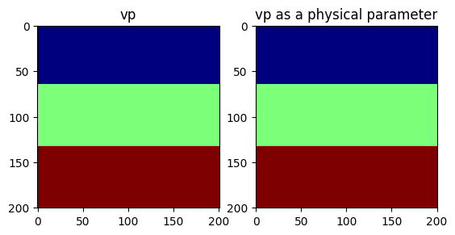
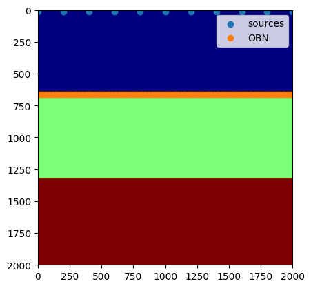
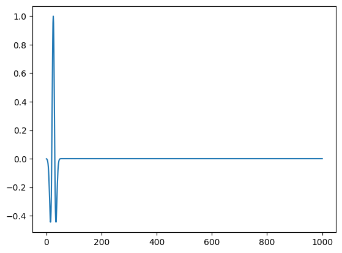
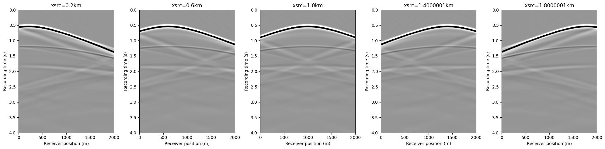

Introduction to JUDI
JUDI is a framework for large-scale seismic modeling and inversion and designed to enable rapid translations of algorithms to fast and efficient code that scales to industry-size 3D problems. The focus of the package lies on seismic modeling as well as PDE-constrained optimization such as full-waveform inversion (FWI) and imaging (LS-RTM). Wave equations in JUDI are solved with Devito, a Python domain-specific language for automated finite-difference (FD) computations. JUDI's modeling operators can also be used as layers in (convolutional) neural networks to implement physics-augmented deep learning algorithms. For this, check out JUDI's deep learning extension via ChainRules.jl in this tutorial.
using JUDI, PythonPlot, LinearAlgebraPhysical problem setup
Grid
JUDI relies on a cartesian grid for modeling and inversion. We start by defining the parameters needed for a cartesian grid:
- A shape
- A grid spacing in each direction
- An origin
shape = (201, 201) # Number of gridpoints nx, nz
spacing = (10.0, 10.0) # #n meters here
origin = (0.0, 0.0) # In meters as well(0.0, 0.0)Physical object
JUDI defines a few basic types to handle physical object such as the velocity model. The type PhyisicalParameter is an abstract vector and behaves as a standard vector. A PhysicalParameter can be constructed in various ways but always require the origin o and grid spacing d that cannot be infered from the array.
PhysicalParameter(v::Array{vDT}, d, o) where `v` is an n-dimensional array and n=size(v)
PhysicalParameter(n, d, o; vDT=Float32) Creates a zero PhysicalParameter
PhysicalParameter(v::Array{vDT}, A::PhysicalParameter) Creates a PhysicalParameter from the Array `v` with n, d, o from `A`
PhysicalParameter(v::Array{vDT, N}, n::Tuple, d::Tuple, o::Tuple) where `v` is a vector or nd-array that is reshaped into shape `n`
PhysicalParameter(v::vDT, n::Tuple, d::Tuple, o::Tuple) Creates a constant (single number) PhyicalParameterLet's make a simple three layer velocity model
# Define the velocity (in km/sec=m/ms)
vp = 1.5f0 * ones(Float32, shape)
vp[:, 66:end] .= 2.0f0
vp[:, 134:end] .= 2.5f0
# Create a physical parameter
VP = PhysicalParameter(vp, spacing, origin);Let's plot the velocities. Because we adopt a standad cartesian dimension ordering for generality (X, Z) in 2D and (X, Y, Z) in 3D, we plot the transpose of the velocity for proper visualization.
figure()
subplot(121)
imshow(vp', cmap="jet")
title("vp")
subplot(122)
imshow(VP', cmap="jet")
title("vp as a physical parameter")
PyObject Text(0.5, 1.0, 'vp as a physical parameter')Because the physical parameter behaves as vector, we can easily perform standard operations on it.
norm(VP), extrema(VP), 2f0 .* VP, VP .^ 2(411.6956f0, (1.5f0, 2.5f0), PhysicalParameter{Float32} of size (201, 201) with origin (0.0, 0.0) and spacing (10.0, 10.0), PhysicalParameter{Float32} of size (201, 201) with origin (0.0, 0.0) and spacing (10.0, 10.0))Model
JUDI then provide a Model structure that wraps multiple physical parameters toghether. A Model accept currently only accept standard Array as an input (to be fixed #1)
model = Model(shape, spacing, origin, 1f0./vp.^2f0)Model (n=(201, 201), d=(10.0f0, 10.0f0), o=(0.0f0, 0.0f0)) with parameters [:m]Modeling
Now that we have a seismic model, we will generate a few shot records.
Acquisition Geometry
The first thing we need is an acquisiton geometry. In JUDI there is two ways to create a Geometry.
- By hand, as we will show here
- From a SEGY file, as we will show in a follow-up tutorial
We create a split-spread geomtry with sources at the top and receivers at the ocean bottom (top of second layer).
Note:
- JUDI currently expects all three coordinates to be inputed to setup a Geometry in 2D as well. This will be fixed in a later version of JUDI.
# Sources position
nsrc = 11
xsrc = range(0f0, (shape[1] -1)*spacing[1], length=nsrc)
ysrc = 0f0 .* xsrc # this a 2D case so we set y to zero
zsrc = 12.5f0*ones(Float32, nsrc);Now this definition creates a single Array of position, which would correspond to a single Simultenous source. Since we are interested in single source experiments here, we convert these position into an Array of Array of size nsrc where each sub-array is a single source position
xsrc, ysrc, zsrc = convertToCell.([xsrc, ysrc, zsrc]);# OBN position
nrec = 101
xrec = range(0f0, (shape[1] -1)*spacing[1], length=nrec)
yrec = 0f0 # this a 2D case so we set y to zero. This can be a single number for receivers
zrec = (66*spacing[1])*ones(Float32, nrec);The last step to be able to create and acquisiton geometry is to define a recording time and sampling rate
record_time = 4000f0 # Recording time in ms (since we have m/ms for the velocity)
sampling_rate = 4f0; # Let's use a standard 4ms sampling rateNow we can create the source and receivers geometry
src_geom = Geometry(xsrc, ysrc, zsrc; dt=sampling_rate, t=record_time)
# For the receiver geometry, we specify the number of source to tell JUDI to use the same receiver position for all sources
rec_geom = Geometry(xrec, yrec, zrec, dt=sampling_rate, t=record_time, nsrc=nsrc);Let's visualize the geometry onto the model
figure();
imshow(vp', cmap="jet", extent=[0, (shape[1]-1)*spacing[1], (shape[2]-1)*spacing[2], 0])
scatter(xsrc, zsrc, label=:sources)
scatter(xrec, zrec, label="OBN")
legend()
PyObject <matplotlib.legend.Legend object at 0x2bf0da200>Source wavelet
For the source wavelet, we will use a standard Ricker wavelet at 10Hz for this tutorial.In practice this wavelet would be read from a file or estimated during inversion.
f0 = 0.010 # Since we use ms, the frequency is in KHz
wavelet = ricker_wavelet(record_time, sampling_rate, f0);
plot(wavelet)
1-element Vector{PyCall.PyObject}:
PyObject <matplotlib.lines.Line2D object at 0x2bf1896c0>judiVector
In order to represent seismic data, JUDI provide the judiVector type. This type wraps a geometry with the seismic data corresponding to it. Let's cretae one for the source
q = judiVector(src_geom, wavelet)judiVector{Float32, Matrix{Float32}} with 11 sourcesLinear operator
The last step to model our seismic data os to create the linear operator representing the discretized wave equation on the Model we defined. We also need to define the linear operator corresponding to the source injection and the receiver interpolation.
Pr = judiProjection(rec_geom) # receiver interpolation
Ps = judiProjection(src_geom) # Source interpolation
Ainv = judiModeling(model) # Inverse of the disrete ewave equation.JUDI forward{Float32} propagator (x * z * time) -> (x * z * time)WARNING While these three operator are well defined in JUDI, judiProjection is a no-op operator and cannot be used by itself but only in combination with a judiModeling operator
Seismic data
Now that we have all our operators setup we can finally generate synthetic data wit ha simple mat-vec product thanks to the abstraction
d_obs = Pr * Ainv * Ps' * qBuilding forward operator
Operator `forward` ran in 0.48 s
Operator `forward` ran in 0.68 s
Operator `forward` ran in 0.69 s
Operator `forward` ran in 0.68 s
Operator `forward` ran in 0.69 s
Operator `forward` ran in 0.68 s
Operator `forward` ran in 0.66 s
Operator `forward` ran in 0.68 s
Operator `forward` ran in 0.68 s
Operator `forward` ran in 0.66 s
Operator `forward` ran in 0.68 s
judiVector{Float32, Matrix{Float32}} with 11 sourcesdata_extent = [xrec[1], xrec[end], 1f-3*record_time, 0]
figure(figsize=(20, 5))
for i=1:5
subplot(1, 5, i)
imshow(d_obs.data[2*i], vmin=-1, vmax=1, cmap="Greys", extent=data_extent, aspect="auto")
xlabel("Receiver position (m)")
ylabel("Recording time (s)")
title("xsrc=$(1f-3xsrc[2*i][1])km")
end
tight_layout()